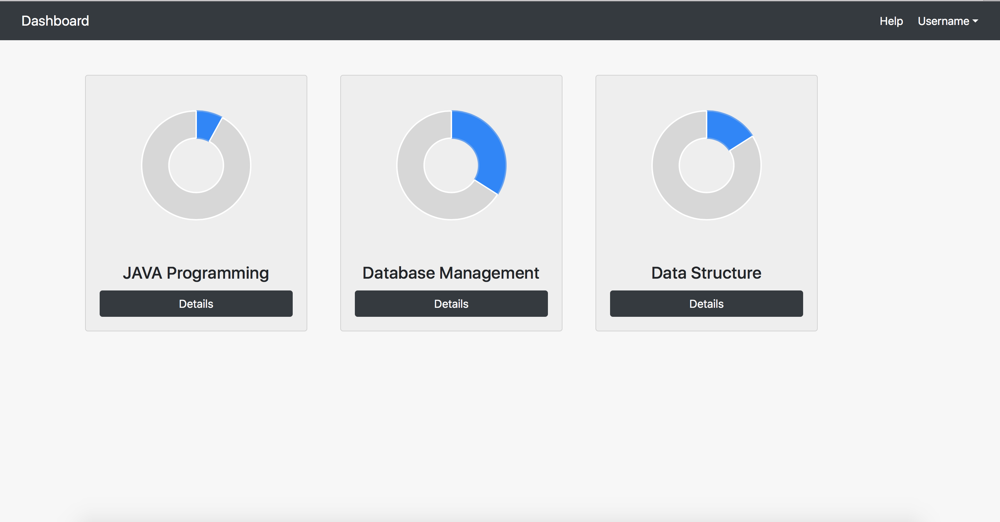
Figure 1 Dashboard page
1. Card: Each course is represented by a card with a circle which shows the percentage of the whole progress. If you want to know more details about that course, you can click Details button.
2. Help: If you have no idea what this system is or how you can do with it, you can click the Help button at the top right corner.
3. LogOut: If you want to exist the system, you can click the UserName button to log out.
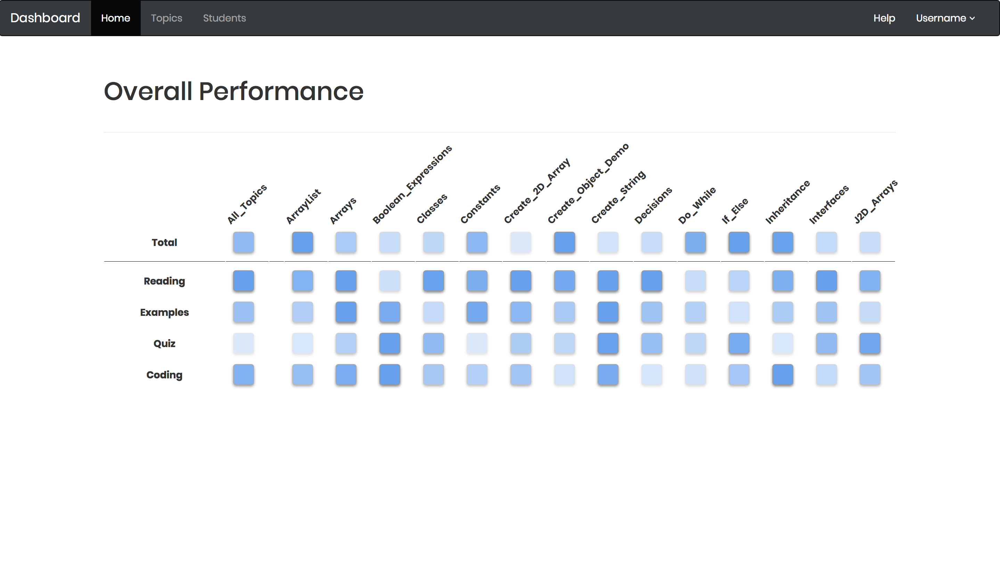
Figure 2 Overall page
1. Grid: Each grid shows the progress of one topic. The first row is Total performance, and the next four rows show the sub performance, including Reading, Examples, Quiz, and Coding. The dark the grid is, the more progress the students make within the corresponding topic.
2. Percentage: If you click one grid, it will show the accurate percentage. And click it again, it will hide(Figure 3).
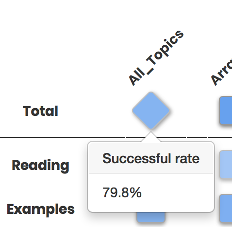
Figure 3 Accurate percentage
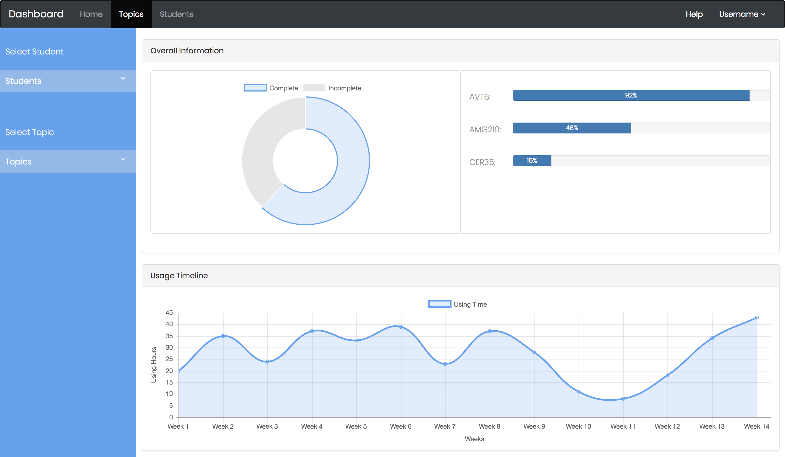
Figure 4 Topic Page
1. In this page, you can see the details of one topic. Also, you can pick up at most three students to see their performance.
2. Select Students: When you first enter this page, the performance of the first three students will be displayed in the page. If you want to see others' performance, you can pick up one, two or three students(Figure 5). However, if you pick up the fourth student, the system will warn you(Figure 6).
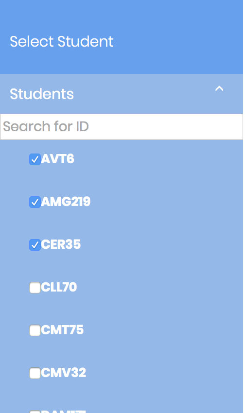
Figure 5 Select students
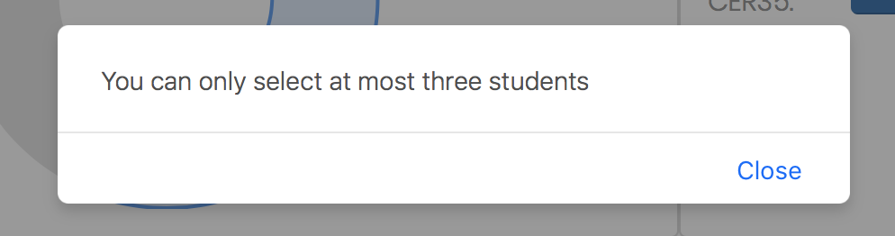
Figure 6 System warning
3. Search Students: If you know the PittIDs of students, you can search them by PittID(Figure 7).
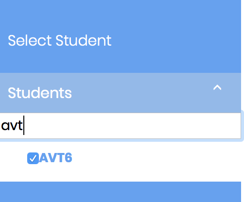
Figure 7 Search students
4. Select Topic: You can click the topics to explore their details. But you can only see one topic at one time(Figure 8).
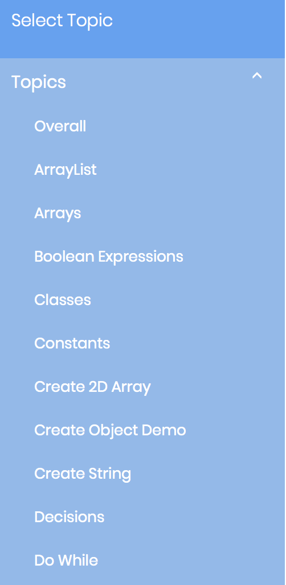
Figure 8 Select a topic
5. Topic Details: For each topic, you can know the number of students who don't complete it. If you select students, you can also know how much percentage they have finished the topic no matter the overall information(Figure 9) or the single section(Figure 10).
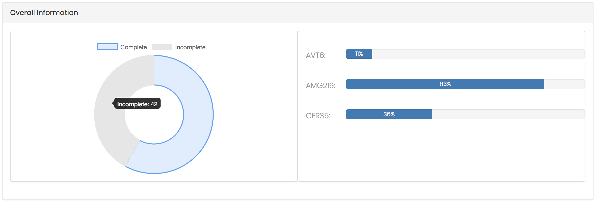
Figure 9 Overall information
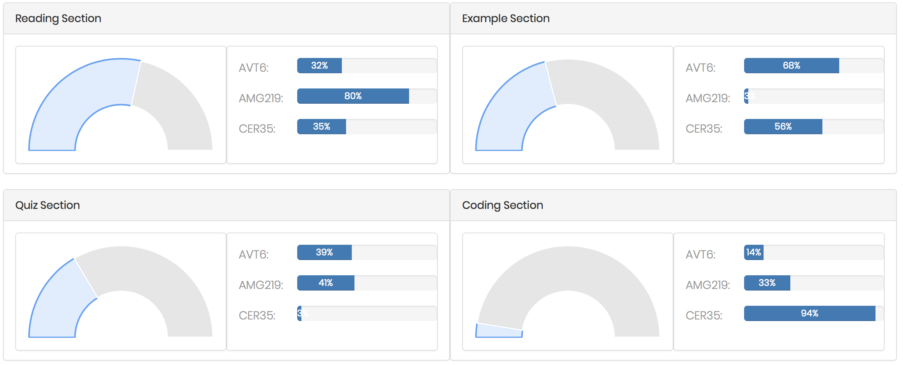
Figure 10 Single Section
6. Usage Timeline: You can learn how much time students spend on this system each week(Figure 11).
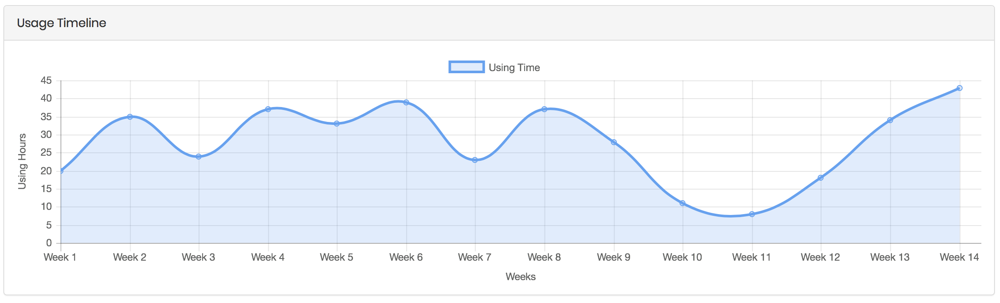
Figure 11 Usage Timeline
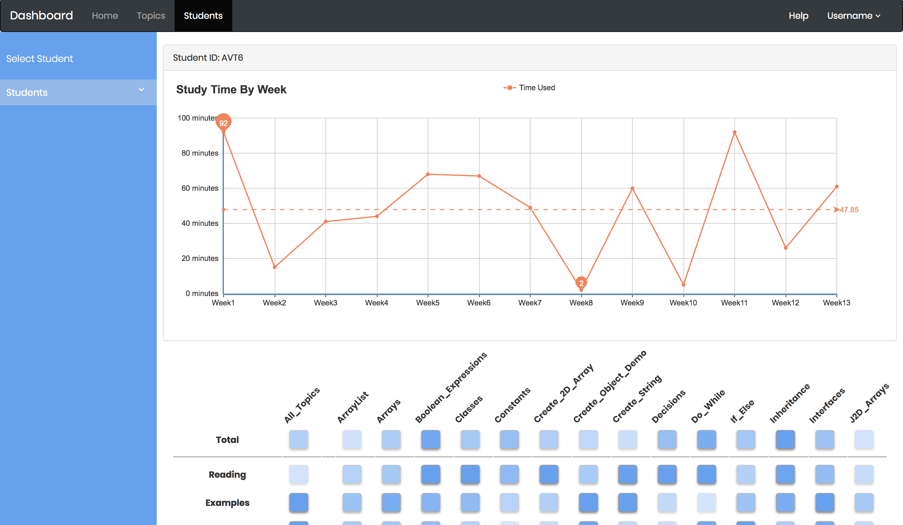
Figure 12 Student Page
1. In this page, you can know the details of one student, including how much time he spends in this system, and how many progresses he makes on each topic(Figure 12).
2. Select Student: you can only pick up one students here, since this page is designed to display the information of one student(Figure 13).
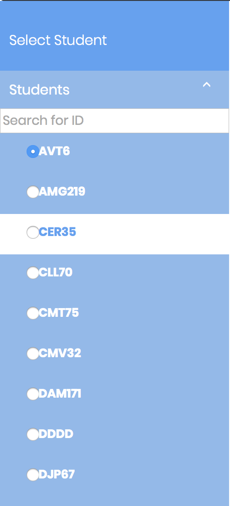
Figure 13 Select a student
3. Search Student: the same as the search function in the topic page. You can search students by their PittIds(Figure 14).
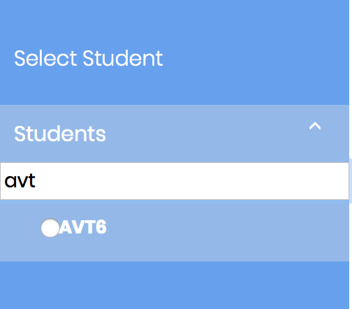
Figure 14 Search a student
4. Study Time: You can know how much time the selected student spends on the system each week. The highest point and the lowest point is marked. If you move the mouse to the one week in the graph, you can see accurate time(Figure 15).
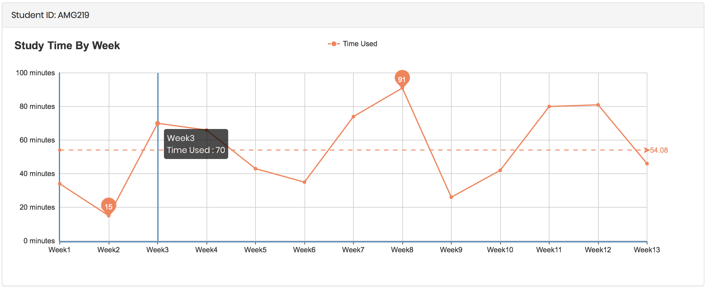
Figure 15 Study Time
5. Topic Grids: For each student, this grid can show how many progresses they make on each topic. If you click one grid, the accurate percentage will pop up(Figure 16). Click again, it will hide.
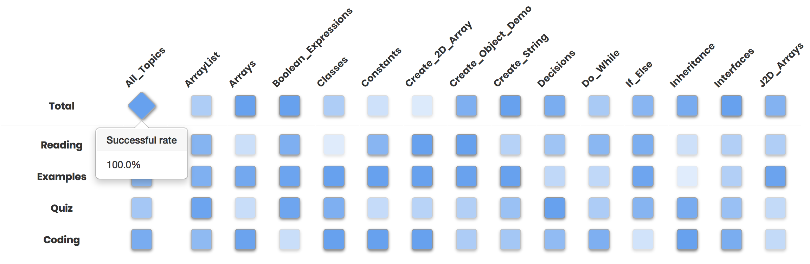
Figure 16 Topic Grids